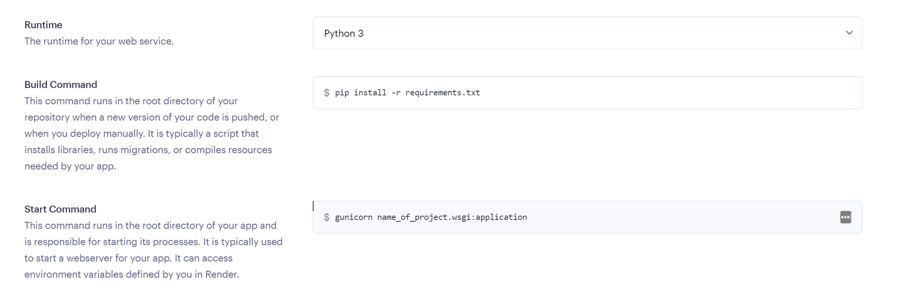

Before Starting first Setup your database
Create A Web Service
Head over to your Render dashboard. Click New + and Select Web Service
Install gunicorn and change your requirements.txt in your Django project. By performing pip freeze > requirements.txt, you can update installed packages in your requirements.txt. This automatically changes your project's list of required files.
Then, push your changes to Git. Remember, you connected Git to your web service, so Render monitors the repo and auto deploys when it detects any changes.
Install gunicorn
pip install gunicorn
update your requirements.txt
pip freeze > requirements.txt
Make sure that you add Render Web Services to your ALLOWED_HOSTS in settings.py
Also make sure that your requirements.txt is file is up to date, As it will be neccessary to install libraries, resources to your app
In start command enter $gunicorn your_directory_name.wsgi.application
